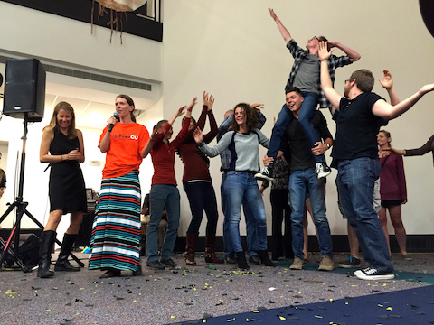
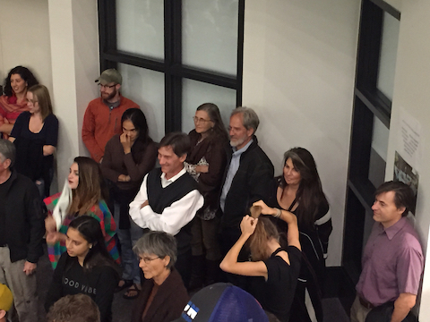
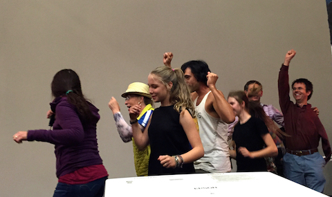

Where was it?
Located at CU Boulder's Sustainability, Energy, and Environment Complex, in October 2015.

Who was there?

Institute of Arctic and Alpine (INSTAAR) Research Director Jim White.

Nobel Laureate and National Institute of Standards and Technology (NIST) Physicist Eric Cornell.